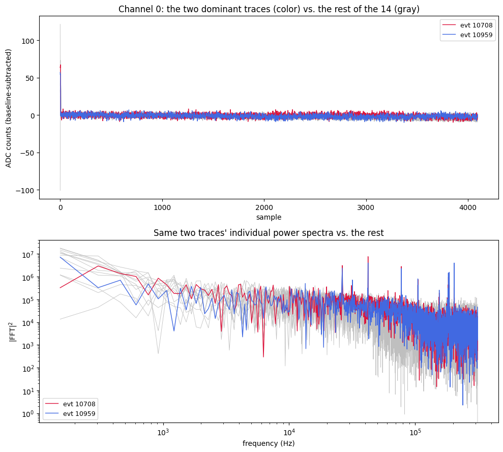
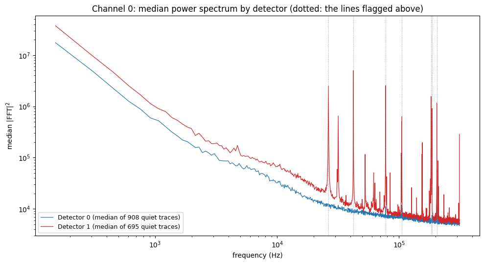

Origin of the sharp peaks in the average noise PSD; the 204 kHz line
Code Repository
good_pulses_overlay.ipynb— the “Origin of the sharp peaks in the average PSD” section, the detector comparison, and the three-cut comparison. Pinned to850500f.python/— the library it uses (Note 1a). Pinned to085aa3d.
Question
The average PSD of the 14 selected Channel 0 traces in Note 3 has several sharp peaks. In the larger selections of Note 6 (192, 744 and 179 traces) most of them are gone, except one near 200 kHz. Where do the peaks come from, and why does that one survive?
Throughout, the leading glitch samples are kept in the traces that go into the FFT (a deliberate choice; baseline subtraction skips them only when computing the mean it subtracts).
Two traces dominate the 14-trace average
Peaks were located programmatically as bins standing well above a rolling median of the log-power, and then, for each peak bin, the summed power over the 14 traces was split by trace. The same two events, 10708 and 10959, are the largest contributor at 7 of the 8 flagged bins (the remaining one is the lowest-frequency bin, an edge effect of the steep low-frequency slope rather than a real peak):
| Frequency (Hz) | Top contributor | Its share of summed power | Top two together |
|---|---|---|---|
| 26,398 | evt 10708 | 0.49 | 0.87 |
| 42,267 | evt 10708 | 0.62 | 0.95 |
| 77,667 | evt 10708 | 0.53 | 0.96 |
| 105,591 | evt 10708 | 0.51 | 0.80 |
| 183,258 | evt 10959 | 0.60 | 0.95 |
| 186,462 | evt 10959 | 0.73 | 0.93 |
| 204,010 | evt 10959 | 0.68 | 0.87 |
| 153 (lowest bin) | evt 10037 | 0.16 | 0.31 |
At each peak, one or two of the 14 traces supply 80–96% of the summed power. Plotted individually, both traces follow the noise floor of the other twelve almost everywhere, but carry narrow spikes 1–2 orders of magnitude above their own local continuum at those frequencies. In the time domain they are indistinguishable from ordinary noise apart from the known leading-glitch spike, so the lines are visible only in the frequency domain.

A single-sample glitch produces a broadband, roughly flat contribution to |FFT|2, not narrow lines, so the leading glitch samples cannot explain these peaks.
Both traces are from Detector 1, and the lines are Detector 1’s
The 21-trace selection behind Note 3 spans Detectors 0 and 1, and the channel filter did not separate them. Of the 14 Channel 0 traces, 12 are from Detector 0 and 2 are from Detector 1: events 10708 and 10959, the two that dominate every peak.
To see whether the lines belong to those events or to the detector, the median power spectrum was taken over all quiet-baseline Channel 0 traces of each detector (bstd < 3, so pulses and drifts cannot affect a median): 908 traces from Detector 0 and 695 from Detector 1, with no further selection. The excess is each line bin’s median power divided by the median of the five bins on each side.
| Line (Hz) | Detector 0 | Detector 1 |
|---|---|---|
| 26,398 | 1.0× | 50× |
| 42,267 | 1.1× | 181× |
| 77,667 | 1.5× | 58× |
| 105,591 | 1.7× | 27× |
| 183,258 | 1.0× | 16× |
| 186,462 | 1.3× | 20× |
| 204,010 | 6.0× | 28× |

Detector 1 has all seven lines in its median spectrum (16–181×), so they are present in at least half of its quiet traces, and it has many more lines than the seven flagged; its continuum is also visibly higher. Detector 0 shows only the 204 kHz line, and more weakly (6×). So the sharp peaks in the 14-trace average come from its two Detector 1 traces because Detector 1 has these lines, not because those two events are unusual. It also means that averaging the two detectors together gives a spectrum that describes neither.
The 204 kHz line
The larger selections of Note 6 (192, 744 and 179 traces) are Detector 0 only, which is why the Detector 1 lines are absent there: there are no Detector 1 traces in them, so it is not a matter of dilution. The 204 kHz line is the one flagged line present in both detectors (6× in Detector 0, 28× in Detector 1). Within Detector 0, a per-trace check at the 204,010 Hz bin for the three selections gives:
| Selection | Traces | Largest single trace, share of summed power | Fraction of traces > 2× local neighbors | Median excess over neighbors |
|---|---|---|---|---|
excursion_band | 192 | 0.03 | 0.73 | 5.3× |
excursion_band_loose | 744 | 0.01 | 0.72 | 4.9× |
excursion_band_AI | 179 | 0.03 | 0.72 | 5.1× |
“Local neighbors” means the median of the five bins on each side of 204,010 Hz, taken per trace.
No trace dominates (the largest supplies 1–3%), yet about 72% of individual traces show a real excess at that exact bin, by a median factor of about 5. In the median spectrum of the 179 excursion_band_AI traces, two adjacent bins (204,010 and 204,163 Hz) stand at about 5.4×104, against roughly 5–10×103 in the bins around them — a line about two bins (~300 Hz) wide.

Common to most traces but never dominated by one or two is what a population-wide narrowband pickup tone looks like, as opposed to per-event contamination. That it appears in both detectors, more strongly in Detector 1, suggests a source common to both readouts. The data alone cannot say what produces it (a clock, a switching supply, something in the readout); that needs the DAQ and electronics documentation.
Status / Next Steps
- Identify the source of the Detector 1 line comb and of the ~204 kHz line from the electronics documentation. The comb is larger than the seven lines flagged here.
- Check the other detectors and channels, the other dumps (
F0002–F0005) and other series for the same lines, and whether their frequency and amplitude are stable over time. - Compute noise PSDs per detector (and per channel), not from mixed selections.
- Decide how to treat the lines when a noise PSD is used for optimal filtering (mask, notch, or keep).
- Build a Detector 1 noise selection with the cuts of Note 2 and Note 6 (so far only Detector 0 has been done) and repeat the peak search on it.